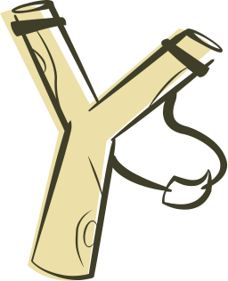
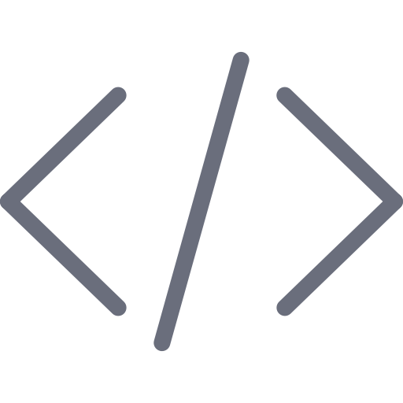
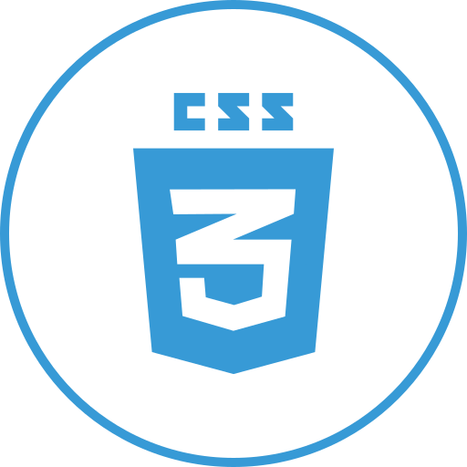
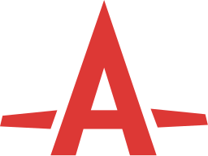
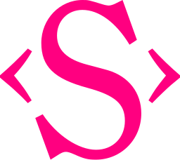
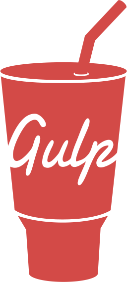
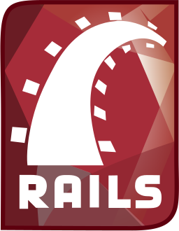

<article class="using-techs"><h2 class="article-name">Что я использую</h2><ul class="techs"><li> html5</li><li> haml</li><li> microdata</li></ul><ul class="techs"><li> css3</li><li> sass/scss</li><li> autoprefixer</li><li> bootstrap</li><li> susy</li><li> typi</li></ul><ul class="techs"><li> RWD &amp; AWD</li><li> svg</li><li> gsap</li></ul><ul class="techs"><li> javascript</li><li> coffeescript</li><li> jquery</li></ul><ul class="techs"><li> gulp</li><li> rails</li><li> git</li><li> chrome dev tools</li></ul></article>